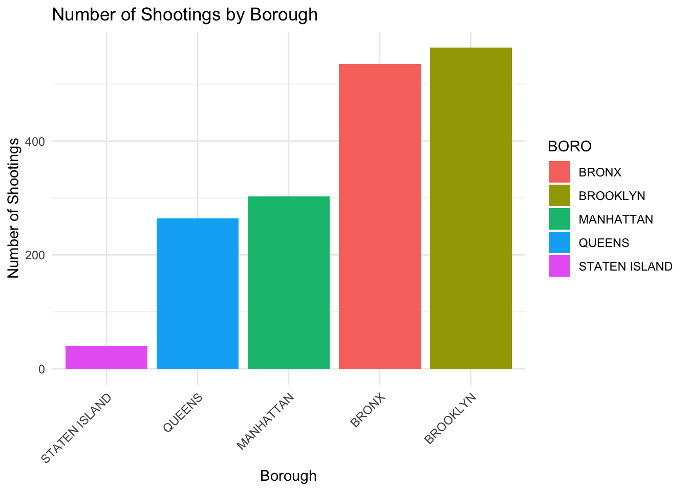
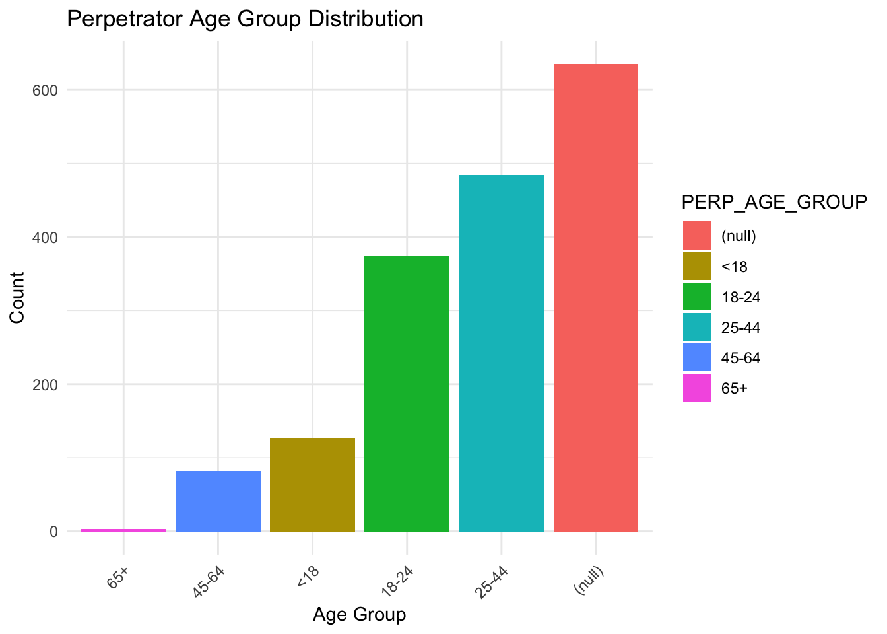
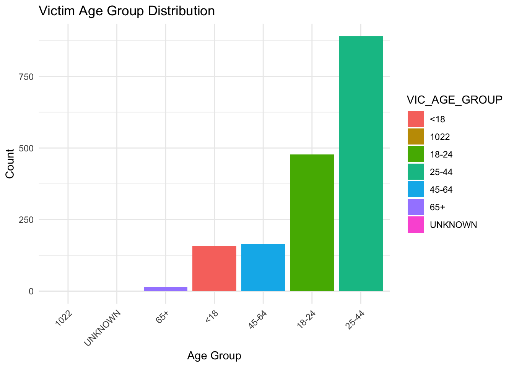
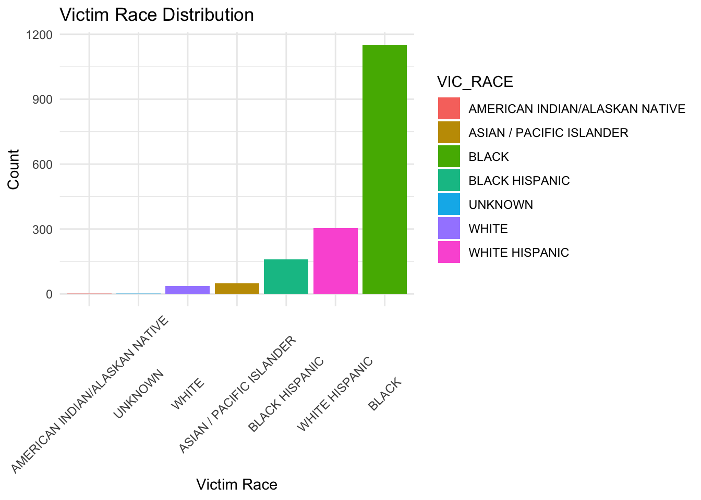

INCIDENT_KEY OCCUR_DATE BORO PRECINCT
Min. :238531159 Length:1706 Length:1706 Min. : 1.00
1st Qu.:243566417 Class :character Class :character 1st Qu.: 42.00
Median :247200780 Mode :character Mode :character Median : 60.00
Mean :247286170 Mean : 62.14
3rd Qu.:250665115 3rd Qu.: 79.00
Max. :261190187 Max. :123.00
JURISDICTION_CODE LOC_CLASSFCTN_DESC LOCATION_DESC
Min. :0.0000 Length:1706 Length:1706
1st Qu.:0.0000 Class :character Class :character
Median :0.0000 Mode :character Mode :character
Mean :0.2585
3rd Qu.:0.0000
Max. :2.0000
STATISTICAL_MURDER_FLAG PERP_AGE_GROUP PERP_SEX
Mode :logical Length:1706 Length:1706
FALSE:1368 Class :character Class :character
TRUE :338 Mode :character Mode :character
PERP_RACE VIC_AGE_GROUP VIC_SEX VIC_RACE
Length:1706 Length:1706 Length:1706 Length:1706
Class :character Class :character Class :character Class :character
Mode :character Mode :character Mode :character Mode :character
X_COORD_CD Y_COORD_CD Latitude Longitude
Min. : 929510 Min. :127539 Min. :40.52 Min. :-74.20
1st Qu.:1000227 1st Qu.:184263 1st Qu.:40.67 1st Qu.:-73.94
Median :1008245 Median :210147 Median :40.74 Median :-73.91
Mean :1009397 Mean :211643 Mean :40.75 Mean :-73.91
3rd Qu.:1016866 3rd Qu.:241412 3rd Qu.:40.83 3rd Qu.:-73.88
Max. :1059828 Max. :269204 Max. :40.91 Max. :-73.73
Lon_Lat
Length:1706
Class :character
Mode :character
# Convert 'OCCUR_DATE' to datetime formatdata <- data %>%mutate(OCCUR_DATE =dmy(OCCUR_DATE), OCCUR_YEAR =year(OCCUR_DATE))
Warning: There was 1 warning in `mutate()`.
ℹ In argument: `OCCUR_DATE = dmy(OCCUR_DATE)`.
Caused by warning:
! 1017 failed to parse.
NYPD_arrest_data <-readRDS("dataset/nypd_arrest.rds")combined_df <-merge(data, NYPD_arrest_data, by =c("X_COORD_CD", "Y_COORD_CD","Latitude","Longitude","PERP_SEX","JURISDICTION_CODE","PERP_RACE"))
# Geographical Heatmap: Concentration of shootings in different boroughsborough_counts <- data %>%count(BORO) %>%arrange(desc(n))ggplot(borough_counts, aes(x =reorder(BORO, n), y = n, fill = BORO)) +geom_bar(stat ="identity") +theme_minimal() +labs(title ='Number of Shootings by Borough', x ='Borough', y ='Number of Shootings') +theme(axis.text.x =element_text(angle =45, hjust =1))

# Perpetrator and Victim Demographics: Age Group Distributionperp_age_counts <- data %>%count(PERP_AGE_GROUP) %>%arrange(desc(n))vic_age_counts <- data %>%count(VIC_AGE_GROUP) %>%arrange(desc(n))# Plotting Perpetrator Age Group Distributionggplot(perp_age_counts, aes(x =reorder(PERP_AGE_GROUP, n), y = n, fill = PERP_AGE_GROUP)) +geom_bar(stat ="identity") +theme_minimal() +labs(title ='Perpetrator Age Group Distribution', x ='Age Group', y ='Count') +theme(axis.text.x =element_text(angle =45, hjust =1))

# Plotting Victim Age Group Distributionggplot(vic_age_counts, aes(x =reorder(VIC_AGE_GROUP, n), y = n, fill = VIC_AGE_GROUP)) +geom_bar(stat ="identity") +theme_minimal() +labs(title ='Victim Age Group Distribution', x ='Age Group', y ='Count') +theme(axis.text.x =element_text(angle =45, hjust =1))

# Ensure we're working with the numeric part of the dataset#numeric_data <- data %>% #select_if(is.numeric)# Compute the correlation matrix, handling NA values by computing correlations for complete pairs#cor_matrix <- cor(numeric_data, use = "pairwise.complete.obs")# Plot the correlation matrix using ggcorrplot#ggcorrplot(cor_matrix, method = "circle", type = "lower", #lab = TRUE, lab_size = 3, tl.cex = 10, tl.col = "black",#title = "Correlation Matrix of Numeric Variables")
# STILL WORKING ON IT# ggplot(data, aes(x = variable1, y = variable2)) +# geom_point() +# theme_minimal() +# labs(title = "Scatter Plot of variable1 vs. variable2",# x = "variable1",# y = "variable2")
# STILL WORKING ON IT# ggplot(data, aes(x = variable)) +# geom_histogram(bins = 30, fill = "blue", color = "black") +# theme_minimal() +# labs(title = "Histogram of variable",# x = "variable",# y = "Frequency")
# STILL WORKING ON IT# # Linear regression model # lm_model <- lm(variable1 ~ variable2, data = data)# # # Summarize the model# summary(lm_model)
prep_race_counts <- data |>count(PERP_RACE) |>arrange(desc(n))ggplot(prep_race_counts, aes(x =reorder(PERP_RACE, n), y = n, fill = PERP_RACE)) +geom_bar(stat ="identity") +theme_minimal() +labs(title ="Perpetrator Race Distribution", x ="Perpetrator Race", y ="Count") +theme(axis.text.x =element_text(angle =45, hjust =1))
vic_race_counts <- data |>count(VIC_RACE) |>arrange(desc(n))ggplot(vic_race_counts, aes(x =reorder(VIC_RACE, n), y = n, fill = VIC_RACE)) +geom_bar(stat ="identity") +theme_minimal() +labs(title ="Victim Race Distribution", x ="Victim Race", y ="Count") +theme(axis.text.x =element_text(angle =45, vjust =0.5, hjust=0.5))

# Calculate proportions Blog Post 4proportions <- data %>%group_by(PERP_RACE) %>%summarise(Proportion =mean(STATISTICAL_MURDER_FLAG =="TRUE", na.rm =TRUE))# Create the plotggplot(proportions, aes(x = PERP_RACE, y = Proportion, fill = PERP_RACE)) +geom_bar(stat ="identity") +theme_minimal() +labs(title ="Proportion of Incidents Classified as Statistical Murders by Perpetrator Race",x ="Perpetrator Race",y ="Proportion") +theme(axis.text.x =element_text(angle =45, hjust =1))
Reading layer `tl_2022_36_tract' from data source
`/Users/saisriram/Desktop/MA615/Team6/tl_2022_36_tract/tl_2022_36_tract.shp'
using driver `ESRI Shapefile'
Simple feature collection with 5411 features and 12 fields
Geometry type: MULTIPOLYGON
Dimension: XY
Bounding box: xmin: -79.76259 ymin: 40.47658 xmax: -71.77749 ymax: 45.01586
Geodetic CRS: NAD83
nyc_tracts <- complete_data |>filter(COUNTYFP %in%c("005", "047", "061", "081", "085"))map_df <-st_as_sf(combined_df, coords =c("Longitude", "Latitude"), crs =4326, agr ="constant")# Plotting the shapefile for NYC tracts and overlaying pointsfinal_plot <-ggplot() +geom_sf(data = nyc_tracts, fill ="white", color ="gray") +geom_sf(data = map_df, color ="brown3", size =1, alpha =0.5) +# Adds the pointstheme_minimal() +labs(title ="Map of New York City with Offense Data Points", x ="Longitude", y ="Latitude")# Print the final plotprint(final_plot)
# explores relationships between perpetrator and victim demographics# Compare perpetrator and victim age groupsggplot(combined_df, aes(x = PERP_AGE_GROUP, fill = VIC_AGE_GROUP)) +geom_bar(position ="dodge") +labs(x ="Perpetrator Age Group", y ="Count", fill ="Victim Age Group") +theme_minimal() +ggtitle("Comparison of Perpetrator and Victim Age Groups")
# Analyzing race and gender impactggplot(combined_df, aes(x = PERP_RACE, fill = VIC_SEX)) +geom_bar(position ="stack") +labs(x ="Perpetrator Race", y ="Count", fill ="Victim Sex") +theme_minimal() +ggtitle("Impact of Perpetrator Race on Victim Sex") +theme(axis.text.x =element_text(angle =45, hjust =1))
# offense and Perpetrator race correlationcombined_df |>group_by(OFNS_DESC) |>summarise(Count =n(), .groups ='drop') |>filter(Count >=50) |>ggplot(aes(x = OFNS_DESC, y = Count, fill = OFNS_DESC)) +geom_bar(stat ="identity", position ="dodge") +coord_flip() +theme_minimal() +labs(x ="Offense Description", y ="Count") +guides(fill =FALSE)
Warning: The `<scale>` argument of `guides()` cannot be `FALSE`. Use "none" instead as
of ggplot2 3.3.4.
combined_df |>group_by(OFNS_DESC, PERP_RACE) |>summarise(Count =n(), .groups ='drop') |>filter(Count >=10) |>ggplot(aes(x = OFNS_DESC, y = Count, fill = PERP_RACE)) +geom_bar(stat ="identity", position ="dodge") +coord_flip() +theme(axis.text.x =element_text(angle =0, hjust =1)) +theme_minimal() +labs(x ="Offense Description", y ="Count", fill ="Perpetrator Race")
average_salary_by_borough <- nypd_payroll %>%group_by(work_boro) %>%summarise(AverageSalary =mean(base_salary, na.rm =TRUE)) %>%ungroup() # Ensure that we remove the grouping structure# Now plot the average salary by borough using ggplot2ggplot(average_salary_by_borough, aes(x = work_boro, y = AverageSalary, fill = work_boro)) +geom_col(position ="dodge") +theme_minimal() +labs(title ="Average Salary by Work Location Borough", x ="Work Location Borough", y ="Average Salary") +guides(fill =FALSE)
# Calculate average salary by boroughaverage_salary_by_borough <- nypd_payroll %>%group_by(work_boro) %>%summarise(AverageSalary =mean(base_salary, na.rm =TRUE)) %>%ungroup()borough_to_fips <-data.frame(work_boro =c("BRONX", "BROOKLYN", "MANHATTAN", "QUEENS", "OTHER"), # Note: Ensure the names match the dataCOUNTYFP =c("005", "047", "061", "081", "085"))average_salary_by_fips <- average_salary_by_borough %>%left_join(borough_to_fips, by ="work_boro")average_salary_by_fips <- average_salary_by_fips %>%select(COUNTYFP, AverageSalary)head(average_salary_by_fips)
# map Average Salary by NYC Boroughnyc_tracts_salary <- nyc_tracts %>%left_join(average_salary_by_fips, by ="COUNTYFP")# Plot the map with average salaries indicated by colorggplot(nyc_tracts_salary) +geom_sf(aes(fill = AverageSalary), color ="gray", size =0.5) +scale_fill_gradient(low ="white", high ="deepskyblue4", name ="Avg Salary",na.value ="grey50", labels = scales::dollar_format()) +labs(title ="Average Salary by NYC Borough",subtitle ="Color intensity indicates average salary levels",fill ="Average Salary") +theme_minimal() +theme(legend.position ="right")
# Average Salary and Crime Data Points by NYC Boroughmap_df <-st_transform(map_df, st_crs(nyc_tracts_salary)$epsg)final_combined_plot <-ggplot() +geom_sf(data = nyc_tracts_salary, aes(fill = AverageSalary), color ="gray", size =0.5) +geom_sf(data = map_df, aes(color = VIC_RACE), size =1, alpha =0.7) +scale_fill_gradient(low ="white", high ="deepskyblue4", name ="Avg Salary",na.value ="grey50", labels = scales::dollar_format()) +scale_color_manual(values =c("ASIAN / PACIFIC ISLANDER"="green", "BLACK"="brown3", "WHITE HISPANIC"="yellow", "WHITE"="deeppink", "UNKNOWN"="darkgray", "BLACK HISPANIC"="darkblue"), name ="Victim's Race") +labs(title ="Average Salary and Crime Data Points by NYC Borough",subtitle ="Boroughs colored by average salary; Points indicate crime locations",fill ="Average Salary", x ="Longitude", y ="Latitude", color ="Victim's Race") +theme_minimal() +theme(legend.position ="right")print(final_combined_plot)
map_df <-st_transform(map_df, st_crs(nyc_tracts_salary)$epsg)final_combined_plot2 <-ggplot() +geom_sf(data = nyc_tracts_salary, aes(fill = AverageSalary), color ="gray", size =0.5) +geom_sf(data = map_df, aes(color = PERP_RACE), size =1, alpha =0.7) +scale_fill_gradient(low ="white", high ="deepskyblue4", name ="Avg Salary",na.value ="grey50", labels = scales::dollar_format()) +scale_color_manual(values =c("ASIAN / PACIFIC ISLANDER"="green", "BLACK"="brown3", "WHITE HISPANIC"="yellow", "WHITE"="deeppink", "UNKNOWN"="darkgray", "BLACK HISPANIC"="darkblue"), name ="Perpetrator's Race") +labs(title ="Average Salary and Crime Data Points by NYC Borough",subtitle ="Boroughs colored by average salary; Points indicate crime locations",fill ="Average Salary", x ="Longitude", y ="Latitude", color ="Perpetrator's Race") +theme_minimal() +theme(legend.position ="right")print(final_combined_plot2)
vic_race <- combined_df |>count(VIC_RACE) |>arrange(desc(n))ggplot(vic_race, aes(x =reorder(VIC_RACE, n), y = n, fill = VIC_RACE)) +geom_bar(stat ="identity") +theme_minimal() +labs(title ="Victim Race Distribution", x ="Victim Race", y ="Count") +theme(axis.text.x =element_text(angle =45, vjust =0.5, hjust=0.5))
library(randomForest)
randomForest 4.7-1.1
Type rfNews() to see new features/changes/bug fixes.
Attaching package: 'randomForest'
The following object is masked from 'package:dplyr':
combine
The following object is masked from 'package:ggplot2':
margin
# weights: 320 (252 variable)
initial value 5909.856014
iter 10 value 4481.873149
iter 20 value 4098.349411
iter 30 value 3862.622898
iter 40 value 3815.275185
iter 50 value 3803.097032
iter 60 value 3794.484527
iter 70 value 3791.953534
iter 80 value 3791.144229
iter 90 value 3789.976831
iter 100 value 3789.240580
final value 3789.240580
stopped after 100 iterations
summary(model)
Call:
multinom(formula = BORO ~ LOC_CLASSFCTN_DESC + PERP_AGE_GROUP +
VIC_AGE_GROUP + VIC_RACE + OFNS_DESC, data = combined_df)
Coefficients:
(Intercept) LOC_CLASSFCTN_DESCDWELLING LOC_CLASSFCTN_DESCHOUSING
BROOKLYN 5.38309657 0.1718707 3.295637
MANHATTAN 0.46403462 -2.1523707 2.180908
QUEENS 0.01138576 -1.3614395 2.359438
STATEN ISLAND -13.34881277 1.9154980 -1.363051
LOC_CLASSFCTN_DESCOTHER LOC_CLASSFCTN_DESCPARKING LOT
BROOKLYN -10.914521 10.010840
MANHATTAN -1.143160 12.655627
QUEENS -11.472180 11.966612
STATEN ISLAND -8.390643 4.151562
LOC_CLASSFCTN_DESCPLAYGROUND LOC_CLASSFCTN_DESCSTREET
BROOKLYN 0.349577 0.1641429
MANHATTAN -9.845198 -0.8751595
QUEENS -1.093975 -0.4069299
STATEN ISLAND -5.444282 0.4083409
LOC_CLASSFCTN_DESCTRANSIT LOC_CLASSFCTN_DESCVEHICLE
BROOKLYN 2.587202 -13.566446
MANHATTAN -2.669428 -15.193567
QUEENS 2.851006 -4.027211
STATEN ISLAND -2.069582 -11.946448
PERP_AGE_GROUP18-24 PERP_AGE_GROUP25-44 PERP_AGE_GROUP45-64
BROOKLYN -0.8569572 -0.2041359 0.98260276
MANHATTAN -1.6842132 -1.2386525 -0.03904947
QUEENS -1.8826932 -0.9375756 -0.76083764
STATEN ISLAND -2.3567747 -4.4366553 0.04666818
PERP_AGE_GROUP65+ VIC_AGE_GROUP18-24 VIC_AGE_GROUP25-44
BROOKLYN -8.873213 0.04889143 -0.4648887
MANHATTAN -9.423610 1.68799027 1.5641813
QUEENS -8.607682 1.03575833 0.5480964
STATEN ISLAND -1.154381 7.60273788 8.1260337
VIC_AGE_GROUP45-64 VIC_AGE_GROUP65+ VIC_AGE_GROUPUNKNOWN
BROOKLYN -1.3435642 -0.6298162 3.97523253
MANHATTAN 1.6719071 -8.4860889 -0.81143390
QUEENS -0.1800559 -8.8553482 -0.63612574
STATEN ISLAND 6.3432393 -0.1839871 0.08988613
VIC_RACEBLACK VIC_RACEBLACK HISPANIC VIC_RACEUNKNOWN
BROOKLYN -1.3814241 -2.461144 3.97523253
MANHATTAN -0.1546642 -1.505405 -0.81143390
QUEENS -1.5842094 -1.070678 -0.63612574
STATEN ISLAND 3.9360143 -2.746036 0.08988613
VIC_RACEWHITE VIC_RACEWHITE HISPANIC
BROOKLYN -3.129484 -2.918213
MANHATTAN -0.626568 -1.650751
QUEENS -5.236546 -3.357969
STATEN ISLAND 1.531347 -3.258405
OFNS_DESCALCOHOLIC BEVERAGE CONTROL LAW
BROOKLYN 6.2497664
MANHATTAN -2.0679762
QUEENS -0.8608307
STATEN ISLAND -0.5468655
OFNS_DESCASSAULT 3 & RELATED OFFENSES OFNS_DESCBURGLAR'S TOOLS
BROOKLYN -3.3930757 4.470462
MANHATTAN 0.2465254 7.708313
QUEENS 1.4737148 -1.020152
STATEN ISLAND 0.2296628 -1.798457
OFNS_DESCBURGLARY OFNS_DESCCANNABIS RELATED OFFENSES
BROOKLYN -2.7101618 -4.4792412
MANHATTAN 1.8696887 7.2252667
QUEENS 0.9655227 9.6540442
STATEN ISLAND 2.2656605 -0.3396187
OFNS_DESCCHILD ABANDONMENT/NON SUPPORT
BROOKLYN -10.104494
MANHATTAN -7.609409
QUEENS -4.269084
STATEN ISLAND -4.662274
OFNS_DESCCRIMINAL MISCHIEF & RELATED OF
BROOKLYN -3.4344480982
MANHATTAN -0.0004441068
QUEENS 1.2919340576
STATEN ISLAND 0.4169907935
OFNS_DESCCRIMINAL TRESPASS OFNS_DESCDANGEROUS DRUGS
BROOKLYN -3.449561 -2.809717
MANHATTAN 0.207329 1.424708
QUEENS 1.858272 1.216431
STATEN ISLAND -5.465592 1.985349
OFNS_DESCDANGEROUS WEAPONS OFNS_DESCFELONY ASSAULT
BROOKLYN -2.3764874 -3.52965082
MANHATTAN 0.7904269 0.08852122
QUEENS 2.3825572 1.79355032
STATEN ISLAND 1.6730465 0.94812246
OFNS_DESCFOR OTHER AUTHORITIES OFNS_DESCFORGERY OFNS_DESCFRAUDS
BROOKLYN -4.331489 -1.886508 -3.802961
MANHATTAN -0.419131 2.058801 -3.348098
QUEENS -8.217205 2.771782 -7.249211
STATEN ISLAND -6.069437 -4.030094 3.846216
OFNS_DESCGAMBLING OFNS_DESCGRAND LARCENY
BROOKLYN -2.592840 -1.694616
MANHATTAN -1.489660 1.322054
QUEENS -7.332114 1.483683
STATEN ISLAND -3.732154 3.804702
OFNS_DESCGRAND LARCENY OF MOTOR VEHICLE OFNS_DESCHARRASSMENT 2
BROOKLYN -4.275515 -1.47144021
MANHATTAN -8.570816 2.08791486
QUEENS -7.996689 -0.45007574
STATEN ISLAND 2.043654 0.03881866
OFNS_DESCHOMICIDE-NEGLIGENT,UNCLASSIFIE
BROOKLYN -1.47144021
MANHATTAN 2.08791486
QUEENS -0.45007574
STATEN ISLAND 0.03881866
OFNS_DESCINTOXICATED & IMPAIRED DRIVING
BROOKLYN -3.20899749
MANHATTAN 0.07996328
QUEENS 2.41339013
STATEN ISLAND -3.85480606
OFNS_DESCINTOXICATED/IMPAIRED DRIVING
BROOKLYN 6.52646039
MANHATTAN -1.85254272
QUEENS -0.83287035
STATEN ISLAND -0.05512181
OFNS_DESCKIDNAPPING & RELATED OFFENSES
BROOKLYN 5.33502471
MANHATTAN -2.05983054
QUEENS -1.94794177
STATEN ISLAND 0.02228665
OFNS_DESCMISCELLANEOUS PENAL LAW
BROOKLYN -2.9334670
MANHATTAN 0.9208626
QUEENS 2.4178580
STATEN ISLAND 2.2860207
OFNS_DESCMURDER & NON-NEGL. MANSLAUGHTE
BROOKLYN -4.7207310
MANHATTAN -0.5599218
QUEENS 2.6057101
STATEN ISLAND -6.0780024
OFNS_DESCNYS LAWS-UNCLASSIFIED FELONY
BROOKLYN -3.155985
MANHATTAN -8.425087
QUEENS 2.396077
STATEN ISLAND -5.098838
OFNS_DESCOFF. AGNST PUB ORD SENSBLTY &
BROOKLYN -4.0611399
MANHATTAN -0.1091252
QUEENS 0.3820032
STATEN ISLAND -5.1624376
OFNS_DESCOFFENSES AGAINST PUBLIC ADMINI
BROOKLYN -3.3294383
MANHATTAN 0.4393437
QUEENS 0.6021190
STATEN ISLAND 1.9309745
OFNS_DESCOFFENSES AGAINST THE PERSON
BROOKLYN -3.8466893
MANHATTAN -0.8413625
QUEENS -7.6186545
STATEN ISLAND 2.4417923
OFNS_DESCOFFENSES INVOLVING FRAUD
BROOKLYN -3.265997
MANHATTAN 1.661809
QUEENS -7.536230
STATEN ISLAND 2.729618
OFNS_DESCOTHER OFFENSES RELATED TO THEF OFNS_DESCOTHER STATE LAWS
BROOKLYN 5.5895870 7.00720451
MANHATTAN 10.3162699 11.75541031
QUEENS 12.3175929 -1.73158188
STATEN ISLAND 0.4380312 0.07436408
OFNS_DESCOTHER STATE LAWS (NON PENAL LA
BROOKLYN -3.15127671
MANHATTAN 9.20768165
QUEENS -0.94169404
STATEN ISLAND -0.04765943
OFNS_DESCOTHER TRAFFIC INFRACTION OFNS_DESCPETIT LARCENY
BROOKLYN -3.149292 -2.7554024
MANHATTAN -8.002306 0.8995785
QUEENS 2.306239 1.0580068
STATEN ISLAND 2.837280 -3.7350105
OFNS_DESCPOSSESSION OF STOLEN PROPERTY OFNS_DESCRAPE
BROOKLYN -3.9196141 -2.17836862
MANHATTAN -1.4079867 0.04404928
QUEENS 0.9768533 1.89302248
STATEN ISLAND 2.4645774 2.32728333
OFNS_DESCROBBERY OFNS_DESCSEX CRIMES
BROOKLYN -3.0663303 -2.441760
MANHATTAN 1.0738103 0.879036
QUEENS 1.6343687 2.637418
STATEN ISLAND 0.9020777 3.149106
OFNS_DESCUNAUTHORIZED USE OF A VEHICLE
BROOKLYN -4.694043
MANHATTAN -3.512008
QUEENS 0.860939
STATEN ISLAND -3.941346
OFNS_DESCVEHICLE AND TRAFFIC LAWS
BROOKLYN -2.7730431
MANHATTAN 0.5946681
QUEENS 3.4310808
STATEN ISLAND 2.3499057
Std. Errors:
(Intercept) LOC_CLASSFCTN_DESCDWELLING LOC_CLASSFCTN_DESCHOUSING
BROOKLYN 3.823165 0.2812438 0.3853658
MANHATTAN 8.896781 0.3271728 0.3725429
QUEENS 22.601222 0.4357313 0.4450423
STATEN ISLAND 9.879301 0.8536040 3.4180563
LOC_CLASSFCTN_DESCOTHER LOC_CLASSFCTN_DESCPARKING LOT
BROOKLYN 31.2701773 66.76240
MANHATTAN 0.3436321 66.75655
QUEENS 50.1932864 66.76115
STATEN ISLAND 38.9892990 68.22678
LOC_CLASSFCTN_DESCPLAYGROUND LOC_CLASSFCTN_DESCSTREET
BROOKLYN 0.628701 0.2278195
MANHATTAN 46.306222 0.2081963
QUEENS 1.185986 0.2876671
STATEN ISLAND 38.976756 0.7749946
LOC_CLASSFCTN_DESCTRANSIT LOC_CLASSFCTN_DESCVEHICLE
BROOKLYN 1.218343 33.4156788
MANHATTAN 1.688946 71.4082859
QUEENS 1.326813 0.7803245
STATEN ISLAND 9.283981 30.2373652
PERP_AGE_GROUP18-24 PERP_AGE_GROUP25-44 PERP_AGE_GROUP45-64
BROOKLYN 0.2033747 0.2138638 0.3273612
MANHATTAN 0.2084141 0.2154003 0.3372590
QUEENS 0.2408102 0.2493313 0.4452929
STATEN ISLAND 0.3270553 0.6105946 0.5344809
PERP_AGE_GROUP65+ VIC_AGE_GROUP18-24 VIC_AGE_GROUP25-44
BROOKLYN 56.87460 0.1517981 0.1600797
MANHATTAN 43.04724 0.2238148 0.2269404
QUEENS 56.45754 0.2378393 0.2459359
STATEN ISLAND 21.45444 6.4744708 6.4747019
VIC_AGE_GROUP45-64 VIC_AGE_GROUP65+ VIC_AGE_GROUPUNKNOWN
BROOKLYN 0.2306999 0.4763101 3.451548e+01
MANHATTAN 0.2631408 35.4310960 5.502518e+00
QUEENS 0.3450412 47.3031713 7.996824e+01
STATEN ISLAND 6.4856317 45.6752495 2.489843e-05
VIC_RACEBLACK VIC_RACEBLACK HISPANIC VIC_RACEUNKNOWN
BROOKLYN 0.5764637 0.6004869 3.451548e+01
MANHATTAN 0.6462267 0.6725965 5.502518e+00
QUEENS 0.6277580 0.6452815 7.996824e+01
STATEN ISLAND 6.2957449 9.7199912 2.489843e-05
VIC_RACEWHITE VIC_RACEWHITE HISPANIC
BROOKLYN 0.7656591 0.5862328
MANHATTAN 0.7577864 0.6569682
QUEENS 1.0439471 0.6527688
STATEN ISLAND 6.9755605 7.3125098
OFNS_DESCALCOHOLIC BEVERAGE CONTROL LAW
BROOKLYN 127.687515
MANHATTAN 19.536311
QUEENS 7.024816
STATEN ISLAND 3.637502
OFNS_DESCASSAULT 3 & RELATED OFFENSES OFNS_DESCBURGLAR'S TOOLS
BROOKLYN 3.771474 50.373106
MANHATTAN 8.869233 51.004682
QUEENS 22.590349 4.185696
STATEN ISLAND 4.590844 1.248588
OFNS_DESCBURGLARY OFNS_DESCCANNABIS RELATED OFFENSES
BROOKLYN 3.787897 75.773712
MANHATTAN 8.874557 38.708711
QUEENS 22.602354 43.929025
STATEN ISLAND 4.685150 0.932806
OFNS_DESCCHILD ABANDONMENT/NON SUPPORT
BROOKLYN 37.95841
MANHATTAN 63.96659
QUEENS 49.80019
STATEN ISLAND 50.42928
OFNS_DESCCRIMINAL MISCHIEF & RELATED OF
BROOKLYN 3.776107
MANHATTAN 8.871582
QUEENS 22.592007
STATEN ISLAND 4.671975
OFNS_DESCCRIMINAL TRESPASS OFNS_DESCDANGEROUS DRUGS
BROOKLYN 3.826792 3.772347
MANHATTAN 8.891409 8.869215
QUEENS 22.602093 22.591209
STATEN ISLAND 40.875094 4.580792
OFNS_DESCDANGEROUS WEAPONS OFNS_DESCFELONY ASSAULT
BROOKLYN 3.777018 3.773309
MANHATTAN 8.872127 8.870079
QUEENS 22.591612 22.590632
STATEN ISLAND 4.606509 4.584973
OFNS_DESCFOR OTHER AUTHORITIES OFNS_DESCFORGERY OFNS_DESCFRAUDS
BROOKLYN 3.818194 3.854473 3.870786
MANHATTAN 8.884248 8.904094 9.124417
QUEENS 62.517493 22.612772 63.056490
STATEN ISLAND 49.411660 33.079670 4.737744
OFNS_DESCGAMBLING OFNS_DESCGRAND LARCENY
BROOKLYN 3.879275 3.785448
MANHATTAN 8.966480 8.877254
QUEENS 68.089405 22.602934
STATEN ISLAND 39.327422 4.613171
OFNS_DESCGRAND LARCENY OF MOTOR VEHICLE OFNS_DESCHARRASSMENT 2
BROOKLYN 3.853665 27.43474347
MANHATTAN 36.032256 26.78962133
QUEENS 70.060617 51.92543749
STATEN ISLAND 4.674504 0.06291444
OFNS_DESCHOMICIDE-NEGLIGENT,UNCLASSIFIE
BROOKLYN 27.43474347
MANHATTAN 26.78962134
QUEENS 51.92543749
STATEN ISLAND 0.06291444
OFNS_DESCINTOXICATED & IMPAIRED DRIVING
BROOKLYN 3.835086
MANHATTAN 8.908448
QUEENS 22.605551
STATEN ISLAND 39.294526
OFNS_DESCINTOXICATED/IMPAIRED DRIVING
BROOKLYN 137.0021169
MANHATTAN 15.9298206
QUEENS 4.9231659
STATEN ISLAND 0.5404113
OFNS_DESCKIDNAPPING & RELATED OFFENSES
BROOKLYN 1.261155e+02
MANHATTAN 3.564659e+01
QUEENS 1.196784e+01
STATEN ISLAND 6.749640e-04
OFNS_DESCMISCELLANEOUS PENAL LAW
BROOKLYN 3.773880
MANHATTAN 8.870171
QUEENS 22.590689
STATEN ISLAND 4.588219
OFNS_DESCMURDER & NON-NEGL. MANSLAUGHTE
BROOKLYN 3.908566
MANHATTAN 8.914976
QUEENS 22.605899
STATEN ISLAND 46.134791
OFNS_DESCNYS LAWS-UNCLASSIFIED FELONY
BROOKLYN 3.855648
MANHATTAN 43.211854
QUEENS 22.607014
STATEN ISLAND 51.183037
OFNS_DESCOFF. AGNST PUB ORD SENSBLTY &
BROOKLYN 3.809241
MANHATTAN 8.883665
QUEENS 22.604996
STATEN ISLAND 36.096183
OFNS_DESCOFFENSES AGAINST PUBLIC ADMINI
BROOKLYN 3.777585
MANHATTAN 8.872059
QUEENS 22.594873
STATEN ISLAND 4.594418
OFNS_DESCOFFENSES AGAINST THE PERSON
BROOKLYN 3.819607
MANHATTAN 8.906848
QUEENS 61.643976
STATEN ISLAND 4.651208
OFNS_DESCOFFENSES INVOLVING FRAUD
BROOKLYN 3.796663
MANHATTAN 8.875805
QUEENS 56.200447
STATEN ISLAND 4.609548
OFNS_DESCOTHER OFFENSES RELATED TO THEF OFNS_DESCOTHER STATE LAWS
BROOKLYN 48.2249143 78.441147473
MANHATTAN 48.8935631 78.854196485
QUEENS 53.1176497 1.643681636
STATEN ISLAND 0.3737237 0.002794832
OFNS_DESCOTHER STATE LAWS (NON PENAL LA
BROOKLYN 80.8045390
MANHATTAN 61.8503432
QUEENS 6.6957945
STATEN ISLAND 0.6073257
OFNS_DESCOTHER TRAFFIC INFRACTION OFNS_DESCPETIT LARCENY
BROOKLYN 3.808921 3.771874
MANHATTAN 31.327689 8.869694
QUEENS 22.598605 22.592472
STATEN ISLAND 4.645843 8.593164
OFNS_DESCPOSSESSION OF STOLEN PROPERTY OFNS_DESCRAPE
BROOKLYN 3.806913 3.776228
MANHATTAN 8.900884 8.876068
QUEENS 22.603148 22.593480
STATEN ISLAND 4.652236 4.600900
OFNS_DESCROBBERY OFNS_DESCSEX CRIMES
BROOKLYN 3.780023 3.770136
MANHATTAN 8.871934 8.868785
QUEENS 22.593134 22.589801
STATEN ISLAND 4.673316 4.572057
OFNS_DESCUNAUTHORIZED USE OF A VEHICLE
BROOKLYN 3.892620
MANHATTAN 9.208759
QUEENS 22.619077
STATEN ISLAND 43.376362
OFNS_DESCVEHICLE AND TRAFFIC LAWS
BROOKLYN 3.777711
MANHATTAN 8.872558
QUEENS 22.590815
STATEN ISLAND 4.589657
Residual Deviance: 7578.481
AIC: 8074.481
# weights: 340 (268 variable)
initial value 5909.856014
iter 10 value 4346.177699
iter 20 value 3985.365782
iter 30 value 3766.005650
iter 40 value 3697.523673
iter 50 value 3672.737513
iter 60 value 3656.389152
iter 70 value 3650.721596
iter 80 value 3648.619727
iter 90 value 3647.553311
iter 100 value 3646.883265
final value 3646.883265
stopped after 100 iterations
summary(model)
Call:
multinom(formula = BORO ~ LOC_CLASSFCTN_DESC + PERP_RACE + PERP_AGE_GROUP +
VIC_AGE_GROUP + VIC_RACE + OFNS_DESC, data = combined_df)
Coefficients:
(Intercept) LOC_CLASSFCTN_DESCDWELLING LOC_CLASSFCTN_DESCHOUSING
BROOKLYN -2.373918 0.1221416 3.012517
MANHATTAN -5.166003 -2.2408176 1.888519
QUEENS 15.302853 -1.6785343 1.964891
STATEN ISLAND -13.374809 1.7407029 -8.091718
LOC_CLASSFCTN_DESCOTHER LOC_CLASSFCTN_DESCPARKING LOT
BROOKLYN -17.380383 12.606658
MANHATTAN -1.390217 15.077706
QUEENS -13.390927 14.396440
STATEN ISLAND -9.819640 5.974809
LOC_CLASSFCTN_DESCPLAYGROUND LOC_CLASSFCTN_DESCSTREET
BROOKLYN -0.07064734 0.09804304
MANHATTAN -15.01557591 -0.96167149
QUEENS -1.58376597 -0.69435812
STATEN ISLAND -7.54638821 0.06403714
LOC_CLASSFCTN_DESCTRANSIT LOC_CLASSFCTN_DESCVEHICLE
BROOKLYN 2.065785 -20.411063
MANHATTAN -2.941965 -20.130867
QUEENS 3.136824 -3.635781
STATEN ISLAND -1.765486 -14.336368
PERP_RACEBLACK PERP_RACEBLACK HISPANIC PERP_RACEWHITE
BROOKLYN 7.257759 2.576457 0.5269339
MANHATTAN 5.566472 4.137775 -1.9974501
QUEENS -16.814595 -19.552619 -10.3496025
STATEN ISLAND -2.361860 -8.048572 19.1105182
PERP_RACEWHITE HISPANIC PERP_AGE_GROUP18-24 PERP_AGE_GROUP25-44
BROOKLYN 6.172678 -0.8352539 -0.1182323
MANHATTAN 4.734586 -1.6948341 -1.2072681
QUEENS -16.388660 -2.1166145 -1.2173662
STATEN ISLAND -8.362695 -2.4655966 -4.3411867
PERP_AGE_GROUP45-64 PERP_AGE_GROUP65+ VIC_AGE_GROUP18-24
BROOKLYN 0.94499542 -13.35905 0.2943241
MANHATTAN -0.07371546 -16.27690 1.8817583
QUEENS -1.60772732 -12.56288 1.2253106
STATEN ISLAND -0.08329483 -7.16342 9.5105098
VIC_AGE_GROUP25-44 VIC_AGE_GROUP45-64 VIC_AGE_GROUP65+
BROOKLYN -0.3752018 -1.0853066 -0.5884557
MANHATTAN 1.6577723 1.9084363 -13.4846472
QUEENS 0.6981710 0.1812106 -10.3703336
STATEN ISLAND 9.5148597 8.0086777 -0.3196128
VIC_AGE_GROUPUNKNOWN VIC_RACEBLACK VIC_RACEBLACK HISPANIC
BROOKLYN 4.377609 -1.0858192 -1.7044946
MANHATTAN -1.249051 0.1267509 -0.8912605
QUEENS -1.082861 -0.4398343 0.1653753
STATEN ISLAND 3.303089 5.4044408 -2.6109862
VIC_RACEUNKNOWN VIC_RACEWHITE VIC_RACEWHITE HISPANIC
BROOKLYN 4.377609 -2.41276458 -1.9884726
MANHATTAN -1.249051 -0.00460398 -0.8660246
QUEENS -1.082861 -4.02871885 -2.1737595
STATEN ISLAND 3.303089 -3.29667776 -2.5700047
OFNS_DESCALCOHOLIC BEVERAGE CONTROL LAW
BROOKLYN 8.2336958
MANHATTAN -3.6529684
QUEENS -1.0848431
STATEN ISLAND -0.4307234
OFNS_DESCASSAULT 3 & RELATED OFFENSES OFNS_DESCBURGLAR'S TOOLS
BROOKLYN -3.1630252 5.204052
MANHATTAN 0.0879050 8.062815
QUEENS 2.1978875 -1.218981
STATEN ISLAND 0.1087353 -2.260365
OFNS_DESCBURGLARY OFNS_DESCCANNABIS RELATED OFFENSES
BROOKLYN -2.605770 -6.9238697
MANHATTAN 1.633311 8.2703326
QUEENS 1.713103 11.6460965
STATEN ISLAND 1.972926 -0.9573584
OFNS_DESCCHILD ABANDONMENT/NON SUPPORT
BROOKLYN -10.381361
MANHATTAN -7.967030
QUEENS -3.058734
STATEN ISLAND -4.530470
OFNS_DESCCRIMINAL MISCHIEF & RELATED OF
BROOKLYN -3.1046075
MANHATTAN -0.0922304
QUEENS 2.0517055
STATEN ISLAND 0.3199100
OFNS_DESCCRIMINAL TRESPASS OFNS_DESCDANGEROUS DRUGS
BROOKLYN -3.31505274 -2.639850
MANHATTAN -0.03627709 1.229356
QUEENS 2.41913325 1.535873
STATEN ISLAND -4.85964831 1.742550
OFNS_DESCDANGEROUS WEAPONS OFNS_DESCFELONY ASSAULT
BROOKLYN -2.2815398 -3.29025472
MANHATTAN 0.5398624 -0.05922242
QUEENS 3.0131076 2.55716200
STATEN ISLAND 1.4081399 0.78409551
OFNS_DESCFOR OTHER AUTHORITIES OFNS_DESCFORGERY OFNS_DESCFRAUDS
BROOKLYN -3.746351 -1.705361 -3.721927
MANHATTAN -0.321545 1.823530 -3.152096
QUEENS -9.112956 2.724973 -9.009103
STATEN ISLAND -5.790101 -4.628855 3.419626
OFNS_DESCGAMBLING OFNS_DESCGRAND LARCENY
BROOKLYN -2.508884 -1.337965
MANHATTAN -1.761691 1.251408
QUEENS -8.637388 2.275195
STATEN ISLAND -5.918874 3.372359
OFNS_DESCGRAND LARCENY OF MOTOR VEHICLE OFNS_DESCHARRASSMENT 2
BROOKLYN -3.513100 -1.21501172
MANHATTAN -12.811909 1.71785221
QUEENS -7.665202 0.04428426
STATEN ISLAND 2.313070 -0.21056524
OFNS_DESCHOMICIDE-NEGLIGENT,UNCLASSIFIE
BROOKLYN -1.21501172
MANHATTAN 1.71785221
QUEENS 0.04428426
STATEN ISLAND -0.21056524
OFNS_DESCINTOXICATED & IMPAIRED DRIVING
BROOKLYN -2.5520516
MANHATTAN 0.2201628
QUEENS 2.9579383
STATEN ISLAND 0.2310322
OFNS_DESCINTOXICATED/IMPAIRED DRIVING
BROOKLYN 8.3841198
MANHATTAN -3.0745798
QUEENS -1.0191140
STATEN ISLAND -0.1100694
OFNS_DESCKIDNAPPING & RELATED OFFENSES
BROOKLYN 6.67016039
MANHATTAN -2.99096065
QUEENS -2.45511266
STATEN ISLAND 0.06634855
OFNS_DESCMISCELLANEOUS PENAL LAW
BROOKLYN -2.759093
MANHATTAN 0.744649
QUEENS 3.163586
STATEN ISLAND 2.231243
OFNS_DESCMURDER & NON-NEGL. MANSLAUGHTE
BROOKLYN -4.3328833
MANHATTAN -0.4239123
QUEENS 3.7490261
STATEN ISLAND -7.1542534
OFNS_DESCNYS LAWS-UNCLASSIFIED FELONY
BROOKLYN -2.892620
MANHATTAN -11.401162
QUEENS 3.240193
STATEN ISLAND -5.979946
OFNS_DESCOFF. AGNST PUB ORD SENSBLTY &
BROOKLYN -3.9793037
MANHATTAN -0.3314121
QUEENS 1.1020024
STATEN ISLAND -4.8840801
OFNS_DESCOFFENSES AGAINST PUBLIC ADMINI
BROOKLYN -3.161254
MANHATTAN 0.241304
QUEENS 1.156733
STATEN ISLAND 1.724242
OFNS_DESCOFFENSES AGAINST THE PERSON
BROOKLYN -3.3022501
MANHATTAN -0.6489853
QUEENS -8.7896812
STATEN ISLAND 2.8591081
OFNS_DESCOFFENSES INVOLVING FRAUD
BROOKLYN -2.686364
MANHATTAN 1.776641
QUEENS -6.431878
STATEN ISLAND 2.498034
OFNS_DESCOTHER OFFENSES RELATED TO THEF OFNS_DESCOTHER STATE LAWS
BROOKLYN 7.807339 9.360799
MANHATTAN 11.892542 13.832912
QUEENS 14.556856 -3.004911
STATEN ISLAND 5.989067 1.044460
OFNS_DESCOTHER STATE LAWS (NON PENAL LA
BROOKLYN -5.1108509
MANHATTAN 12.1571537
QUEENS -1.3887966
STATEN ISLAND 0.1408587
OFNS_DESCOTHER TRAFFIC INFRACTION OFNS_DESCPETIT LARCENY
BROOKLYN -2.950695 -2.7523521
MANHATTAN -12.430420 0.5926297
QUEENS 2.887470 1.5648049
STATEN ISLAND 2.573880 -6.2457192
OFNS_DESCPOSSESSION OF STOLEN PROPERTY OFNS_DESCRAPE
BROOKLYN -3.548744 -1.9283839
MANHATTAN -1.352005 -0.0922759
QUEENS 1.585890 2.5251511
STATEN ISLAND 2.364024 2.2242799
OFNS_DESCROBBERY OFNS_DESCSEX CRIMES
BROOKLYN -2.9691321 -2.0721705
MANHATTAN 0.8240710 0.8196095
QUEENS 2.2911473 3.2508879
STATEN ISLAND 0.5474707 2.8450814
OFNS_DESCUNAUTHORIZED USE OF A VEHICLE
BROOKLYN -3.973077
MANHATTAN -2.554067
QUEENS 1.976917
STATEN ISLAND -4.980322
OFNS_DESCVEHICLE AND TRAFFIC LAWS
BROOKLYN -2.3554988
MANHATTAN 0.6204204
QUEENS 4.4163541
STATEN ISLAND 2.3906467
Std. Errors:
(Intercept) LOC_CLASSFCTN_DESCDWELLING LOC_CLASSFCTN_DESCHOUSING
BROOKLYN 2.475680 0.2893580 0.3839506
MANHATTAN 5.546627 0.3316622 0.3699146
QUEENS 14.514822 0.4654247 0.4438445
STATEN ISLAND 14.445551 0.8815954 79.2936076
LOC_CLASSFCTN_DESCOTHER LOC_CLASSFCTN_DESCPARKING LOT
BROOKLYN 2.636761e-05 0.8060919
MANHATTAN 3.486555e-01 0.6111661
QUEENS 1.206772e+02 0.7142570
STATEN ISLAND 6.037758e+01 1.0335359
LOC_CLASSFCTN_DESCPLAYGROUND LOC_CLASSFCTN_DESCSTREET
BROOKLYN 6.219333e-01 0.2349476
MANHATTAN 8.201556e-05 0.2120541
QUEENS 1.209765e+00 0.2938414
STATEN ISLAND 7.251280e+01 0.7803210
LOC_CLASSFCTN_DESCTRANSIT LOC_CLASSFCTN_DESCVEHICLE
BROOKLYN 1.224717 1.507987e-05
MANHATTAN 1.658728 2.168612e-05
QUEENS 1.324996 8.017836e-01
STATEN ISLAND 15.267480 7.474944e+01
PERP_RACEBLACK PERP_RACEBLACK HISPANIC PERP_RACEWHITE
BROOKLYN 0.8591915 1.109700 2.083260e-07
MANHATTAN 1.8509230 1.860893 9.154079e-08
QUEENS 4.9026198 4.922927 9.392986e-02
STATEN ISLAND 5.9526968 11.367733 9.395367e-02
PERP_RACEWHITE HISPANIC PERP_AGE_GROUP18-24 PERP_AGE_GROUP25-44
BROOKLYN 0.8623001 0.2125433 0.2261244
MANHATTAN 1.8524455 0.2169528 0.2258099
QUEENS 4.9038531 0.2546401 0.2659732
STATEN ISLAND 6.9223139 0.3497728 0.6324370
PERP_AGE_GROUP45-64 PERP_AGE_GROUP65+ VIC_AGE_GROUP18-24
BROOKLYN 0.3395641 1.535295e-05 0.1561677
MANHATTAN 0.3474382 2.096217e-06 0.2255448
QUEENS 0.4926693 6.521206e-05 0.2445657
STATEN ISLAND 0.5616370 2.267146e-03 13.7793115
VIC_AGE_GROUP25-44 VIC_AGE_GROUP45-64 VIC_AGE_GROUP65+
BROOKLYN 0.1629780 0.2366768 4.801175e-01
MANHATTAN 0.2276552 0.2661800 1.183092e-04
QUEENS 0.2538300 0.3512843 1.054845e+02
STATEN ISLAND 13.7795298 13.7853937 9.737610e+01
VIC_AGE_GROUPUNKNOWN VIC_RACEBLACK VIC_RACEBLACK HISPANIC
BROOKLYN 5.161205e+01 0.5584027 0.5883901
MANHATTAN 9.378493e-01 0.6369578 0.6679914
QUEENS 1.649147e+00 0.6655160 0.6906061
STATEN ISLAND 6.115585e-04 11.1270211 21.2640025
VIC_RACEUNKNOWN VIC_RACEWHITE VIC_RACEWHITE HISPANIC
BROOKLYN 5.161205e+01 0.7590163 0.5747958
MANHATTAN 9.378493e-01 0.7535498 0.6546495
QUEENS 1.649147e+00 1.0716898 0.6997092
STATEN ISLAND 6.115585e-04 72.6738310 13.7430901
OFNS_DESCALCOHOLIC BEVERAGE CONTROL LAW
BROOKLYN 0.03195188
MANHATTAN 0.00373652
QUEENS 0.03315128
STATEN ISLAND 0.02474071
OFNS_DESCASSAULT 3 & RELATED OFFENSES OFNS_DESCBURGLAR'S TOOLS
BROOKLYN 3.226219 72.951839
MANHATTAN 7.362668 73.249082
QUEENS 19.399792 1.172118
STATEN ISLAND 7.051969 1.402493
OFNS_DESCBURGLARY OFNS_DESCCANNABIS RELATED OFFENSES
BROOKLYN 3.245646 4.2075654
MANHATTAN 7.369060 73.0168113
QUEENS 19.413614 74.7447077
STATEN ISLAND 7.114532 0.9846135
OFNS_DESCCHILD ABANDONMENT/NON SUPPORT
BROOKLYN 47.05941
MANHATTAN 68.45276
QUEENS 40.12260
STATEN ISLAND 47.19064
OFNS_DESCCRIMINAL MISCHIEF & RELATED OF
BROOKLYN 3.232122
MANHATTAN 7.365651
QUEENS 19.402064
STATEN ISLAND 7.107213
OFNS_DESCCRIMINAL TRESPASS OFNS_DESCDANGEROUS DRUGS
BROOKLYN 3.292041 3.227059
MANHATTAN 7.390535 7.362477
QUEENS 19.413347 19.401125
STATEN ISLAND 30.821715 7.045238
OFNS_DESCDANGEROUS WEAPONS OFNS_DESCFELONY ASSAULT
BROOKLYN 3.232650 3.228272
MANHATTAN 7.366141 7.363642
QUEENS 19.401294 19.400077
STATEN ISLAND 7.062158 7.048412
OFNS_DESCFOR OTHER AUTHORITIES OFNS_DESCFORGERY OFNS_DESCFRAUDS
BROOKLYN 3.286651 3.322337 3.337766
MANHATTAN 7.381994 7.404837 7.625587
QUEENS 39.317347 19.438595 9.163893
STATEN ISLAND 46.269632 39.037878 7.146960
OFNS_DESCGAMBLING OFNS_DESCGRAND LARCENY
BROOKLYN 3.349085 3.243860
MANHATTAN 7.478954 7.372600
QUEENS 19.495055 19.414510
STATEN ISLAND 112.502384 7.073117
OFNS_DESCGRAND LARCENY OF MOTOR VEHICLE OFNS_DESCHARRASSMENT 2
BROOKLYN 3.343023 2.593394e+01
MANHATTAN 0.172956 2.552519e+01
QUEENS 126.773562 4.993257e+01
STATEN ISLAND 7.125568 1.242395e-04
OFNS_DESCHOMICIDE-NEGLIGENT,UNCLASSIFIE
BROOKLYN 2.593394e+01
MANHATTAN 2.552519e+01
QUEENS 4.993257e+01
STATEN ISLAND 1.242395e-04
OFNS_DESCINTOXICATED & IMPAIRED DRIVING
BROOKLYN 3.305236
MANHATTAN 7.410816
QUEENS 19.417832
STATEN ISLAND 41.782037
OFNS_DESCINTOXICATED/IMPAIRED DRIVING
BROOKLYN 0.024004703
MANHATTAN 0.004305309
QUEENS 0.028436423
STATEN ISLAND 0.002243371
OFNS_DESCKIDNAPPING & RELATED OFFENSES
BROOKLYN 5.211567e-02
MANHATTAN 2.083543e-02
QUEENS 8.297418e-02
STATEN ISLAND 1.769213e-08
OFNS_DESCMISCELLANEOUS PENAL LAW
BROOKLYN 3.229041
MANHATTAN 7.363806
QUEENS 19.400214
STATEN ISLAND 7.050516
OFNS_DESCMURDER & NON-NEGL. MANSLAUGHTE
BROOKLYN 3.407450
MANHATTAN 7.421784
QUEENS 19.421127
STATEN ISLAND 81.196624
OFNS_DESCNYS LAWS-UNCLASSIFIED FELONY
BROOKLYN 3.3423370
MANHATTAN 0.6414121
QUEENS 19.4224917
STATEN ISLAND 69.9382438
OFNS_DESCOFF. AGNST PUB ORD SENSBLTY &
BROOKLYN 3.269627
MANHATTAN 7.379333
QUEENS 19.416815
STATEN ISLAND 32.478872
OFNS_DESCOFFENSES AGAINST PUBLIC ADMINI
BROOKLYN 3.233233
MANHATTAN 7.366073
QUEENS 19.405405
STATEN ISLAND 7.054856
OFNS_DESCOFFENSES AGAINST THE PERSON
BROOKLYN 3.288078
MANHATTAN 7.410257
QUEENS 14.786491
STATEN ISLAND 7.104285
OFNS_DESCOFFENSES INVOLVING FRAUD
BROOKLYN 3.261392
MANHATTAN 7.371974
QUEENS 53.649051
STATEN ISLAND 7.070728
OFNS_DESCOTHER OFFENSES RELATED TO THEF OFNS_DESCOTHER STATE LAWS
BROOKLYN 35.67819 3.493044e+00
MANHATTAN 36.02008 3.421493e+00
QUEENS 37.76761 5.881336e-03
STATEN ISLAND 81.62285 1.316643e-05
OFNS_DESCOTHER STATE LAWS (NON PENAL LA
BROOKLYN 0.024665650
MANHATTAN 0.195414423
QUEENS 0.026734043
STATEN ISLAND 0.004016735
OFNS_DESCOTHER TRAFFIC INFRACTION OFNS_DESCPETIT LARCENY
BROOKLYN 3.2717205 3.226571
MANHATTAN 0.2521706 7.363078
QUEENS 19.4092622 19.402232
STATEN ISLAND 7.0922108 23.791050
OFNS_DESCPOSSESSION OF STOLEN PROPERTY OFNS_DESCRAPE
BROOKLYN 3.270239 3.232076
MANHATTAN 7.400413 7.370966
QUEENS 19.415171 19.403627
STATEN ISLAND 7.099297 7.058730
OFNS_DESCROBBERY OFNS_DESCSEX CRIMES
BROOKLYN 3.236635 3.224496
MANHATTAN 7.366055 7.362071
QUEENS 19.403140 19.399242
STATEN ISLAND 7.108963 7.040376
OFNS_DESCUNAUTHORIZED USE OF A VEHICLE
BROOKLYN 3.387518
MANHATTAN 7.669677
QUEENS 19.433308
STATEN ISLAND 70.844476
OFNS_DESCVEHICLE AND TRAFFIC LAWS
BROOKLYN 3.235327
MANHATTAN 7.367224
QUEENS 19.400613
STATEN ISLAND 7.051979
Residual Deviance: 7293.767
AIC: 7821.767
set.seed(123) # for reproducibilityindex <-createDataPartition(combined_df$BORO, p =0.80, list =FALSE)train_data <- combined_df[index, ]test_data <- combined_df[-index, ]model1 <-multinom(BORO ~ LOC_CLASSFCTN_DESC + PERP_RACE + PERP_AGE_GROUP + VIC_AGE_GROUP + VIC_RACE + OFNS_DESC + STATISTICAL_MURDER_FLAG, data = train_data)
# weights: 345 (272 variable)
initial value 4731.747463
iter 10 value 3503.178937
iter 20 value 3139.207783
iter 30 value 2953.000193
iter 40 value 2920.501733
iter 50 value 2898.352874
iter 60 value 2885.566650
iter 70 value 2881.773075
iter 80 value 2880.241604
iter 90 value 2879.331694
iter 100 value 2878.781392
final value 2878.781392
stopped after 100 iterations
confusion_matrix <-table(Predicted = predictions, Actual = test_data$BORO)library(caret)confusionMatrix(confusion_matrix)
Confusion Matrix and Statistics
Actual
Predicted BRONX BROOKLYN MANHATTAN QUEENS STATEN ISLAND
BRONX 134 35 27 14 0
BROOKLYN 27 117 47 19 5
MANHATTAN 19 46 157 22 8
QUEENS 8 15 2 19 0
STATEN ISLAND 1 0 3 0 7
Overall Statistics
Accuracy : 0.5929
95% CI : (0.5563, 0.6287)
No Information Rate : 0.3224
P-Value [Acc > NIR] : < 2.2e-16
Kappa : 0.4369
Mcnemar's Test P-Value : NA
Statistics by Class:
Class: BRONX Class: BROOKLYN Class: MANHATTAN
Sensitivity 0.7090 0.5493 0.6653
Specificity 0.8600 0.8112 0.8085
Pos Pred Value 0.6381 0.5442 0.6230
Neg Pred Value 0.8946 0.8143 0.8354
Prevalence 0.2582 0.2910 0.3224
Detection Rate 0.1831 0.1598 0.2145
Detection Prevalence 0.2869 0.2937 0.3443
Balanced Accuracy 0.7845 0.6802 0.7369
Class: QUEENS Class: STATEN ISLAND
Sensitivity 0.25676 0.350000
Specificity 0.96201 0.994382
Pos Pred Value 0.43182 0.636364
Neg Pred Value 0.92006 0.981969
Prevalence 0.10109 0.027322
Detection Rate 0.02596 0.009563
Detection Prevalence 0.06011 0.015027
Balanced Accuracy 0.60938 0.672191
Section 1.5: Offense Descriptions
The horizontal bar chart presents a breakdown of various types of offenses. The most frequent offense, represented by the longest bar, is “Vehicle and Traffic Laws,” suggesting a high number of incidents related to traffic violations. “Sex Crimes” and “Robbery” follow, indicating significant occurrence rates within the dataset. Offenses like “Rape” and “Petit Larceny” show lower counts but are still notable. Other categories, including “Offenses Involving Fraud,” “Offenses Against Public Administration,” and “Miscellaneous Penal Law,” display moderate counts. This variable could be instrumental for law enforcement prioritization and public awareness initiatives.